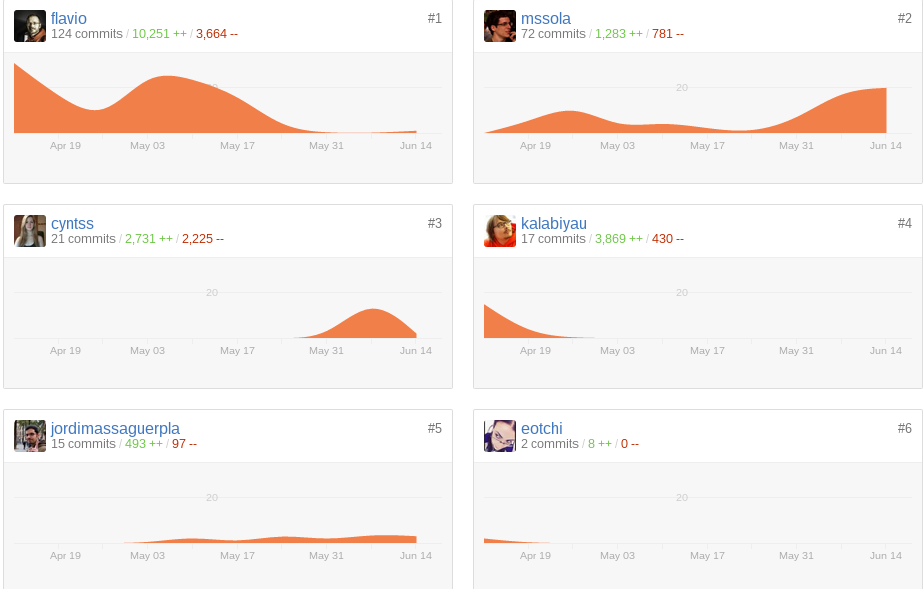

Portus
github.com/suse/portus
Artem Chernikov
DevOps Engineer @ SUSE
https://github.com/kalabiyau
SUSE HackWeek 2015
Apr 12, 2015
github.com/flavio
github.com/eotchi
github.com/cyntss
github.com/kalabiyau
Glorious Contributors

Docker Registry API v2
Auth Diagram

PYYO:TEWU:V7JH:26JV:AQTZ:LJC3:SXVJ:XGHA:34F2:2LAQ:ZRMK:Z7Q6

DuckDuckGo does not work:

neither Google
...the ID of the key which was used to sign the token
github.com/docker/libtrust
type PublicKey interface {
// KeyID returns a distinct identifier which is unique to this Public Key.
// The format generated by this library is a base32 encoding of a 240 bit
// hash of the public key data divided into 12 groups like so:
// ABCD:EFGH:IJKL:MNOP:QRST:UVWX:YZ23:4567:ABCD:EFGH:IJKL:MNOP
KeyID() string
keyIDFromCryptoKey
func keyIDFromCryptoKey(pubKey PublicKey) string {
// Generate and return a 'libtrust' fingerprint of the public key.
// For an RSA key this should be: SHA256(DER encoded ASN1)
// Then truncated to 240 bits and encoded into 12 base32 groups like so:
// ABCD:EFGH:IJKL:MNOP:QRST:UVWX:YZ23:4567:ABCD:EFGH:IJKL:MNOP
derBytes, err := x509.MarshalPKIXPublicKey(pubKey.CryptoPublicKey())
if err != nil {
return ""
}
hasher := crypto.SHA256.New()
hasher.Write(derBytes)
return keyIDEncode(hasher.Sum(nil)[:30])
}
Better Call Saul Security
Miquel Sabaté Solà
Docker team @ SUSE
https://github.com/mssola
An overview

Authorization
- Users should be able to have a better control of the contents of
their private registries:
- Organize repositories in namespaces, controlled by teams.
- Be able to establish policies.
Teams and namespaces
- Organize users in teams.
- Each team member has a role.
- Viewer: can only pull.
- Contributor: can pull and push.
- Owner: can pull, push and manage the team members.
- Each team has a set of namespaces, which group repositories.
- A repository groups multiple tags.
Admin
- List and manage users.
- List teams.
- List and manage users.